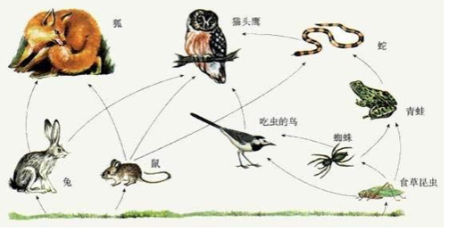

如图所示为某生态系统的食物网示意图，据图回答此题。

现在给你 $n$ 个物种和 $m$ 条能量流动关系，求其中的食物链条数。
物种的名称为从 $1$ 到 $n$ 的编号。
$m$ 条能量流动关系形如
$\begin{array}{ll}a_1 &\ b_1 \\a_2 &\ b_2 \\a_3 &\ b_3 \\\ldots &\ \ldots \\a_{m-1} &\ b_{m-1} \\a_m &\ b_m \\\end{array}$
其中 $a_i \ b_i$ 表示能量从物种 $a_i$ 流向物种 $b_i$。注意单独的一种孤立生物不算一条食物链。
 Comet OJ
Comet OJ